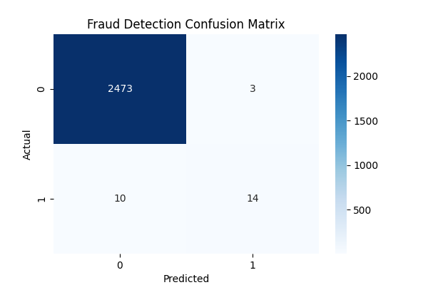
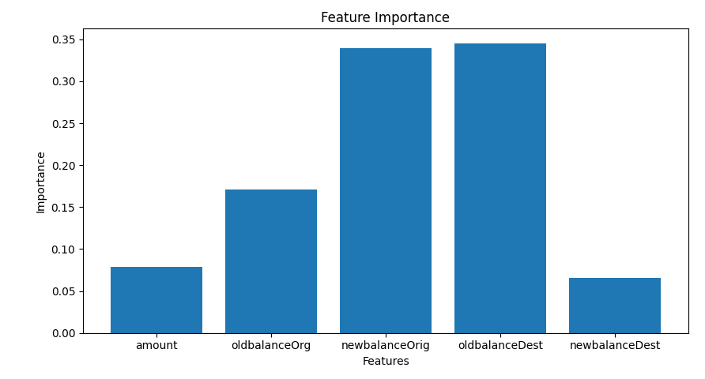

Problem
Financial fraud can hide inside high-volume transaction logs. This project trains AI models to classify whether a transaction is fraudulent using balance changes and transaction amount.
Machine learning for transaction risk analysis
Enter transaction values and receive an instant fraud-risk decision. The demo uses the same transaction signals as the Python model: amount, sender balance changes, and receiver balance changes.

Live Fraud Check
Add numeric transaction values below. The browser model estimates fraud risk from balance inconsistencies, account drain behavior, and transaction size.
XGBoost Accuracy
Random Forest Accuracy
LSTM Accuracy
Project Overview
Financial fraud can hide inside high-volume transaction logs. This project trains AI models to classify whether a transaction is fraudulent using balance changes and transaction amount.
The model uses a labeled financial transaction dataset with fraud indicators and numeric transaction features.
A Streamlit interface lets users enter transaction details and receive a fraud-risk prediction.
Model Pipeline
Read financial transaction records from the CSV dataset.
Use amount, origin balances, and destination balances as model inputs.
Compare XGBoost, Random Forest, and LSTM neural network models.
Measure accuracy, confusion matrix behavior, and feature impact.
Results


Input Features
Local Demo
Train the model with Python, then launch the Streamlit app to test sample transaction inputs.
python3 main.py
streamlit run app.py